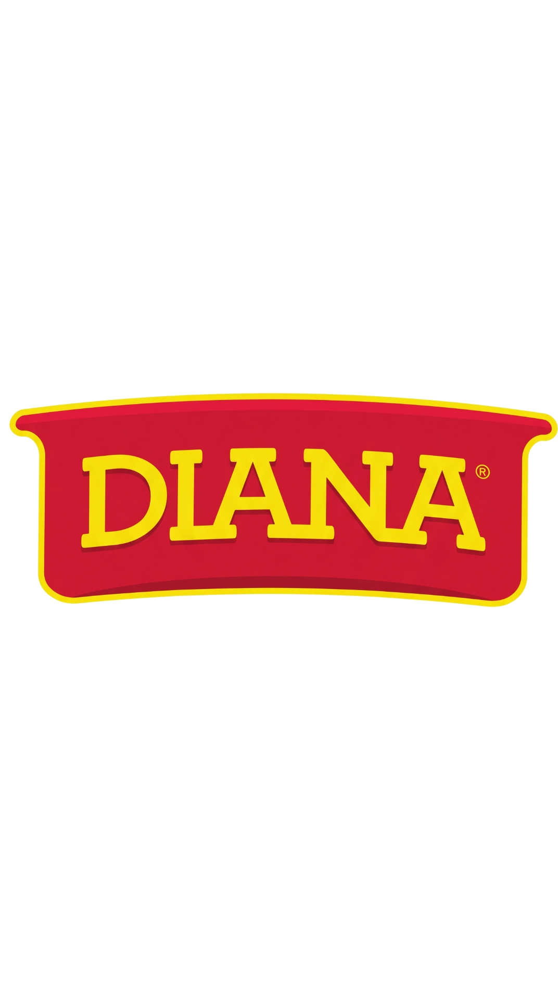

Chicharrones
Diana Crunch+
Rediseño de producto para una nueva audiencia — gym-goers.
Ruta A · nuevo canal: gimnasios, vending y convenience fitness.
Un producto que existe.
Una audiencia que no lo ve como suyo.
El punto de partida es un producto existente con reconocimiento en el mercado, pero presentado desde códigos asociados principalmente a consumo familiar y momentos cotidianos.
Gym-goers urbanos
Personas que entrenan y buscan opciones prácticas alrededor de su rutina.
Fitness
Gimnasios, vending y convenience fitness.
Crunch+
Barbacoa y Limón, con presentación individual.
Solo producto
No se rediseña la identidad corporativa de Diana.
Chicharrones Diana Crunch+
“Crunch” convierte una característica sensorial —sonido y textura— en un activo verbal de campaña. El “+” señala una versión adaptada y de valor añadido, no una afirmación nutricional específica.
Proteína real.”
La redacción final de cualquier claim nutricional debe contrastarse con la información nutricional y legal vigente antes de publicar.
| Decisión | Qué cambia | Por qué responde al nuevo canal/audiencia |
|---|---|---|
| Porción | 30–35 g, individual | Facilita consumo portable; encaja mejor en bolso, casillero o vending que una bolsa familiar. |
| Textura | Énfasis en textura extra crujiente | El “crunch” se vuelve experiencia y lenguaje de campaña. |
| Empaque | Nueva presentación + QR | Destaca en un entorno de gimnasio y conecta el producto físico con contenido digital. |
| Sabores | Barbacoa y Limón | Se conserva el portafolio definido y se diferencian por código cromático. |
El sonido se convierte en un recurso narrativo: primero se escucha, luego se descubre quién está comiendo.
Del pasillo de la pulpería
al casillero del gym.
La dirección visual no pretende que Diana parezca otra marca; busca que el producto puntual pueda convivir visualmente con el entorno fitness.
Evoca acero, máquinas y casilleros.
Energía cálida y código de sabor.
Frescura y señal activa.
Lectura clara y estética editorial.
Big Shoulders / display condensada y angular. Reservada para titulares, nombre y mensajes de alto impacto.
Documental y natural. Luz tenue/natural, tratamiento desaturado, acentos cálidos, fondos oscuros y producto claramente iluminado en planos finales.
Dinámica
Movimiento y ritmo.
Carismática
Personalidad sin actuación exagerada.
Enérgica
Acompaña el contexto fitness.
Segura
Cierre claro, no agresivo.
El crunch
se escucha.
Espacios preparados para las cuatro piezas verticales y el cierre horizontal. Reemplazá cada bloque por la ruta de tu video final.
4 × 9:16 + 1 × 16:9Portátil.
Visible.
Reconocible.
La arquitectura del empaque conserva la lógica del producto puntual y utiliza el color para distinguir sabores.
Presentación individual diferenciada por sabor para el canal fitness.
Empaque Limón

ElevenLabs
Dinámica, carismática y enérgica. En los cierres debe mantenerse segura, directa y natural.
Crunch+
30–35 g, textura enfatizada, empaque adaptado y QR.
Ligeramente premium
Validar con costos, margen y referencias del canal.
Gimnasios
Vending y convenience fitness en zonas de entrenamiento.
Prueba + digital
Sampling, contenido y microinfluencers fitness locales.
La lógica no es abandonar el canal tradicional, sino abrir una ocasión de consumo adicional. En el gimnasio, el contexto ya comunica rutina, movimiento y consumo individual; el mismo producto puede adquirir un significado diferente si cambia su presentación y la forma de ser encontrado.
1 video + 5 posts.
Una misma identidad, un mismo mensaje y una misma lógica visual.
Producto
Hero shot de Crunch+ Barbacoa y Limón.
Crunch test
Pregunta/reto sobre el sonido que hace pensar en Crunch+.
Mito vs realidad
Reencuadrar la percepción del snack para la audiencia fitness.
Relatable
Humor situacional basado en escuchar el crunch de otra persona.
Dónde encontrarlo
Gimnasios, vending/convenience participantes y CTA.
Video principal
Rutina → crunch → descubrimiento → reveal → tagline.
¿Esto realmente conecta?
El testeo es previo a la entrega final. No sustituye la campaña formal.
- Publicar el video/jingle oficial.
- Abrir caja de preguntas dirigida a personas que entrenan.
- Recolectar mínimo 20 respuestas de perfiles reales.
- Agrupar feedback por patrones.
- Ajustar el concepto antes de cerrar.
- ¿Si vieras este producto en tu gimnasio, te llamaría la atención? ¿Por qué?
- ¿Qué cambiarías o mejorarías del empaque?
- ¿Qué entiendes que significa “Crunch+”?
- ¿Qué te transmite la combinación de colores?
- ¿El mensaje “aunque no sea tuyo” te parece fácil de recordar?
| Patrón | N.º | Implicación |
|---|---|---|
| Atracción visual | Pendiente | Qué códigos generan atención. |
| Comprensión | Pendiente | Si Crunch+ se entiende sin explicación. |
| Intención de prueba | Pendiente | Barreras de compra/curiosidad. |
| Percepción de precio | Pendiente | Si el premium parece justificable. |
No fabricar respuestas ni perfiles.
Del concepto a la entrega.
Esta estructura documenta el flujo; responsables y fechas deben asignarse directamente en ClickUp.
Crunch+ convierte la textura, la portabilidad y el sonido del producto en códigos de una experiencia fitness.